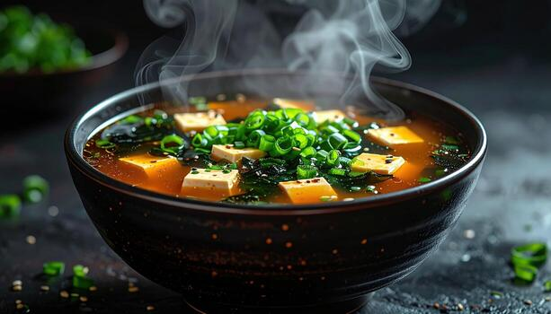
Miso Soup
A serene opening: slow-brewed soybean broth, silken tofu, and hand-cut scallions
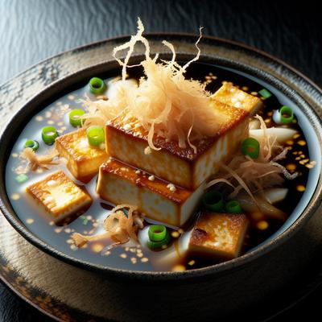
Agedashi Tofu
Gently crisped tofu resting in fragrant dashi, finished with grated daikon
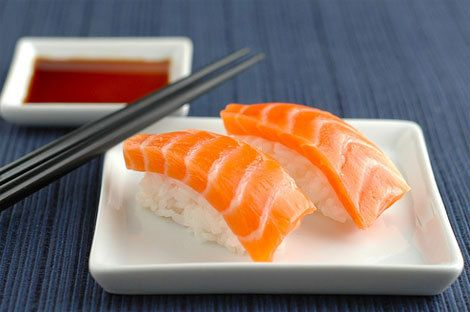
Salmon Nigiri
Line-caught salmon, delicately sliced and placed upon perfectly seasoned sushi rice
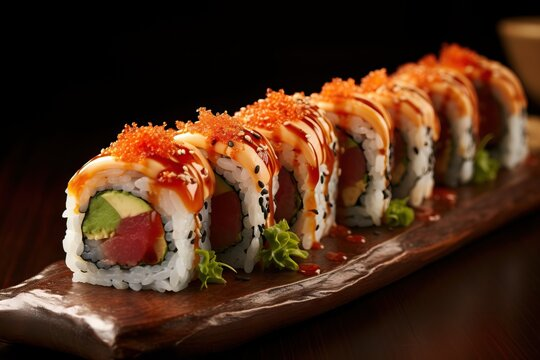
Spicy Tuna Roll
Finely minced tuna balanced with subtle heat, rolled with precision and restraint
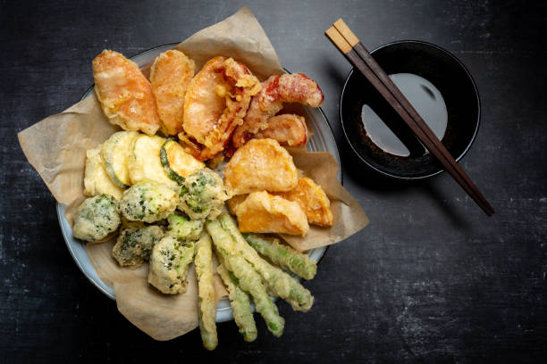
Vegetable Tempura
Seasonal vegetables enrobed in an ethereal batter, fried to golden lightness
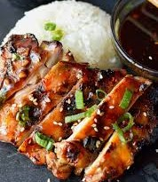
chicken Teriyaki
Char-grilled chicken lacquered with a house-crafted soy glaze, tender and aromatic
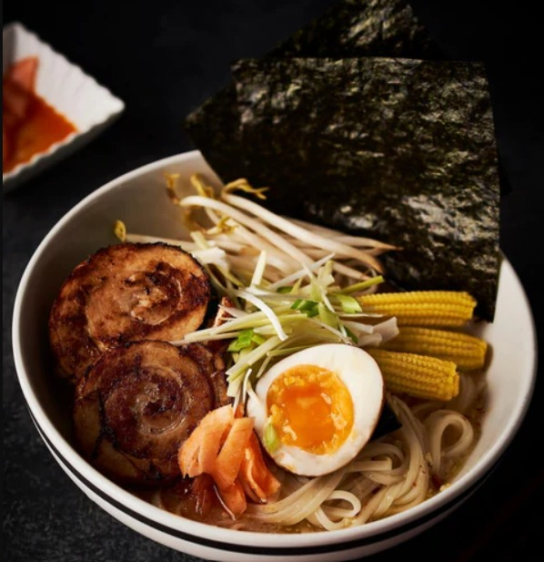
Miso Ramen
A deep, comforting bowl: matured miso broth, spring noodles, and thoughtfully layered garnishes
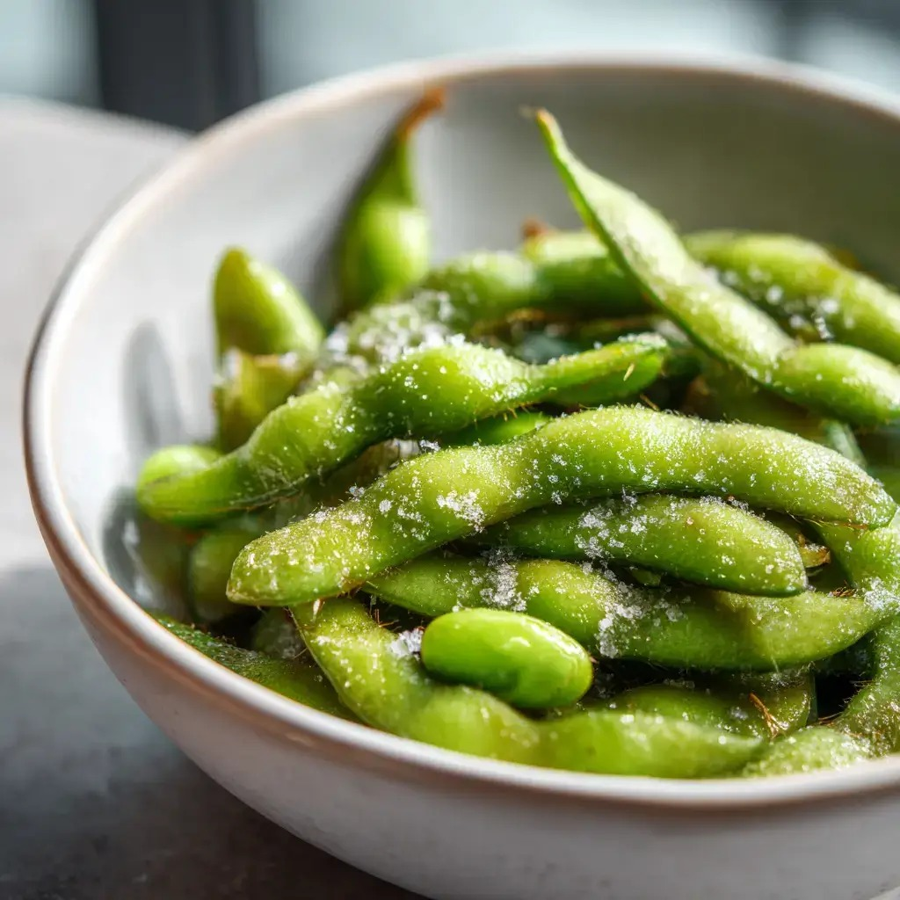
Edamame no Shio
Young soybeans gently steamed and finished with natural sea salt
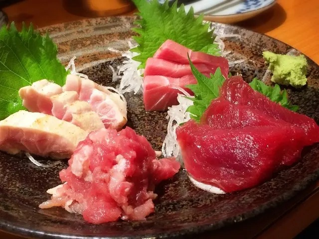
Maguro Sashimi
Hand-cut bluefin tuna, presented in its purest form
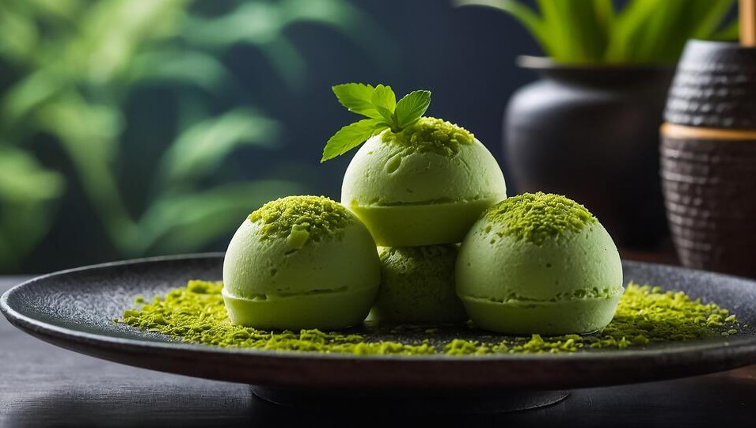
Matcha Mochi Ice Cream
A graceful finale of earthy matcha ice cream wrapped in soft rice mochi
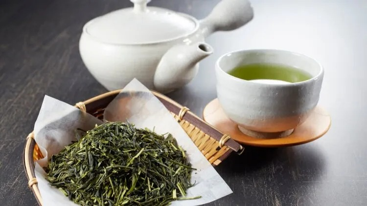
Sencha Green Tea
First-flush Japanese green tea, delicately steamed and hand-brewed for a clean, grassy finish
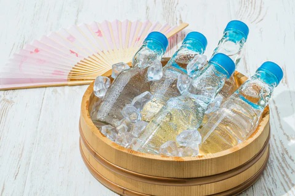